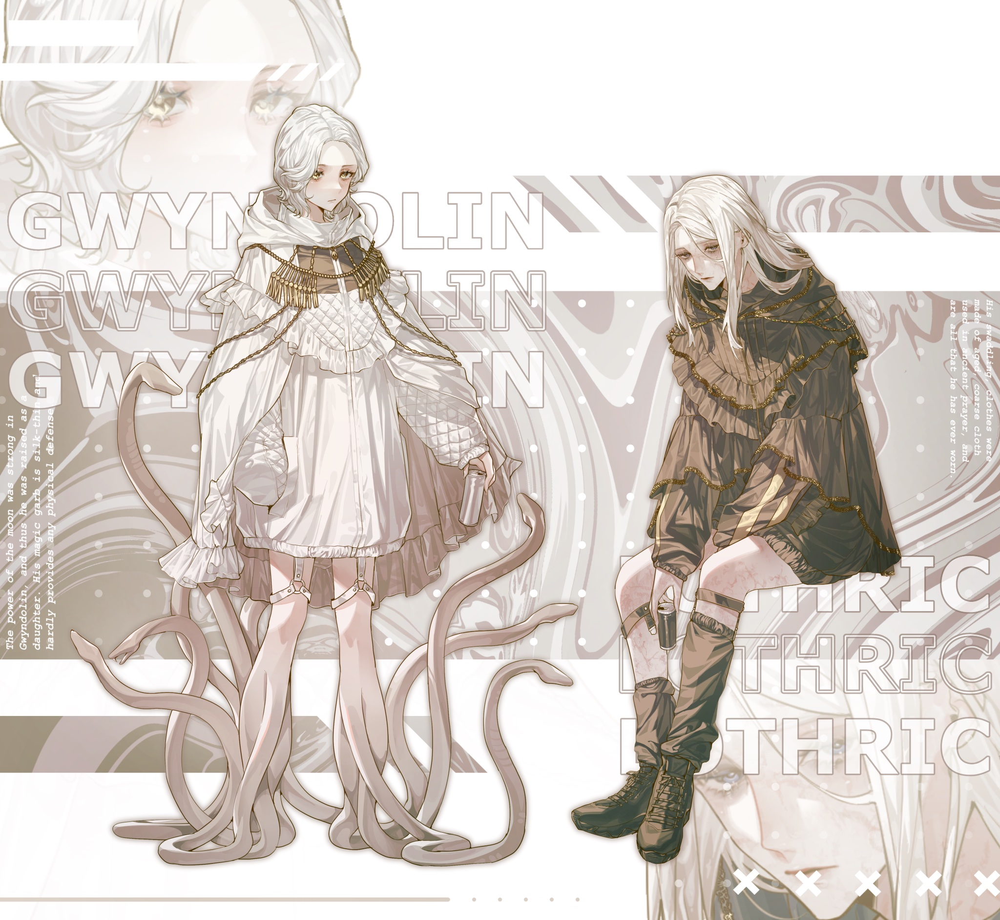
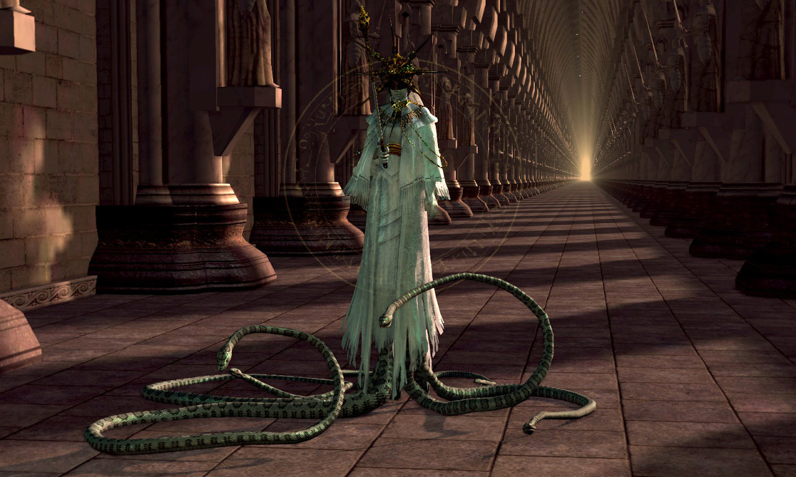
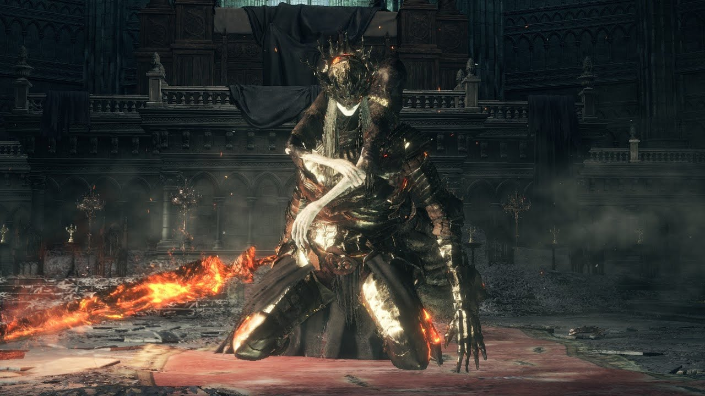

Gwyndolin and Lothric
 An illustrated image of Gwyndolin and Lothric, two bosses who share a voice actor in the Dark Souls games, and my favorite two characters.
Art by: cuso4_suiwabutu
Gwyndolin
Gwyndolin as seen in Dark Souls, his model during his boss fight.
Dark Sun Gwyndolin is the leader of the Blades of the Darkmoon and an optional boss in Dark Souls.
Gwyndolin is the lastborn child of Gwyn, Lord of Sunlight, and one of the deities who resided in Anor Londo during the Age of Fire, although his legitimacy as such only came from being a child of his father. He was worshiped by the humans as the "god of the dark moon" and held the tile of "Sun in the Dark".
Despite being the son of Gwyn, Gwyndolin was born with a strong moon power and a weak and repulsive appearance", particularly due to the snakes coiled around his lower half. Because of his dark moon power and his strong affinity for moon magic, as well as his lineage, Gwyndolin was raised as a female so that he could not officially become the king's heir. While still young, Gwyn made him to wear women's clothing and gave him a magic ring which would allow Gwyndolin to move and act like a girl, leading him to behave like a dark and fleeting goddess
Text by darksouls.fandom.com
The Twin Princes
The Twin Princes, Lorian and Lothric, as seen in Dark Souls 3, their models during their boss fight.
Lothric and Lorian are the sons of Oceiros, King of Lothric and Gwynevere, Queen of Lothric and consequently the princes of the kingdom of Lothric. Gwynevere is also Gwyndolin's sister.
Lorian, as the eldest prince, was designated heir to the throne and for this reason he received the ancient brass armor handed down by the royal family together with a crown helmet patterned with flame. Lorian was raised as a knight and proved his incredible prowess on the battlefield, leading a war against the remnants of the Chaos Demons and even capturing some of them to serve as slaves for Lothric. The prince even faced the Demon Prince in a duel and was able to single-handedly defeat him, resulting in his greatsword being eternally scorched with the flame of chaos and his armor to be stained black.
Lothric instead, as the youngest prince, was designated to become a Lord of Cinder, which would sacrifice himself in the linking of the First Flame to keep the Age of Fire alive. The prince was in fact the hope of the entire kingdom but he was also the result of the obsession of the royal family and the king to produce a worthy Champion from among their ranks as a symbol of their divine mandate and duty. For the young man, who was supposed to enter the Kiln of the Flame arena, a platinum sword was created and blessed with strong magic by the High Priestess even before he was ready to fullfill his destiny. Oceiros in fact created immense propaganda around Lothric, not only giving him the name of the kingdom, but building statues that depicted him ready for sacrifice and with his sacred sword even before he linked the Flame, already preparing his throne at the Firelink Shrine who called him the hope of the kingdom.
Despite all the hopes that were placed in him, Lothric soon revealed himself to be a sick and shriveled child, so weak that he never grew out of his baby clothes, which remained his only clothing throughout his life and were blessed to at least try to keep him healthy. Lothric continued to live and at some point Aldia, the first of the Grand Archives scholars, became his private mentor. The frail prince still demonstrated talent for sorcery, for which he did not need a medium being the son of a deity, and learned several powerful and refined spells.
Text by darksouls.fandom.com
Sound
Boss Fight music for Dark Sun Gwyndolin. Music can be downloaded free at downloads.khinsider.com
Video 1
A video of an experienced Dark Souls player, someone who is filling in for the regular, and her partner, of who she guides through the fight against both Gwyndolin and his father Gwyn.
Video 2
A video of both an experienced Dark Souls player, and his partner, of who he guides through the fight against the Twin Princes.